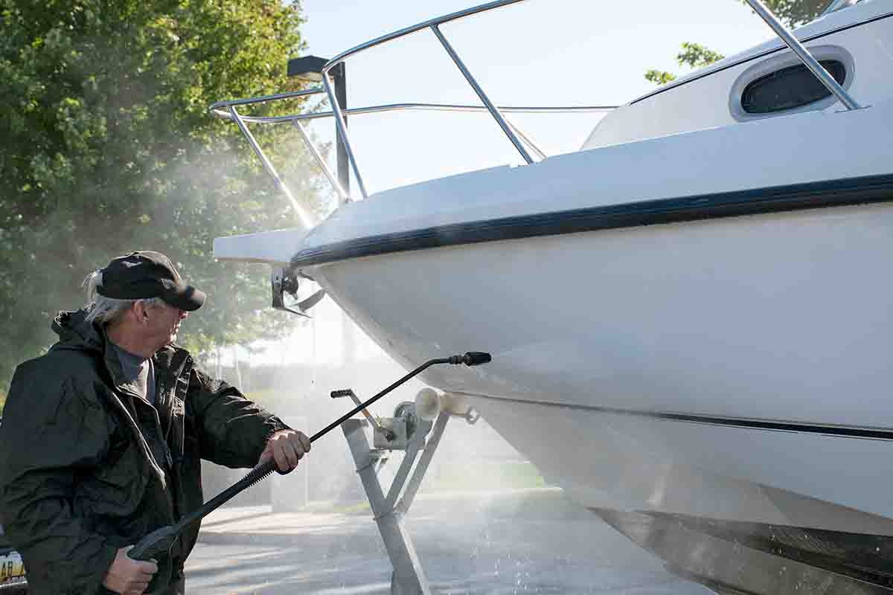
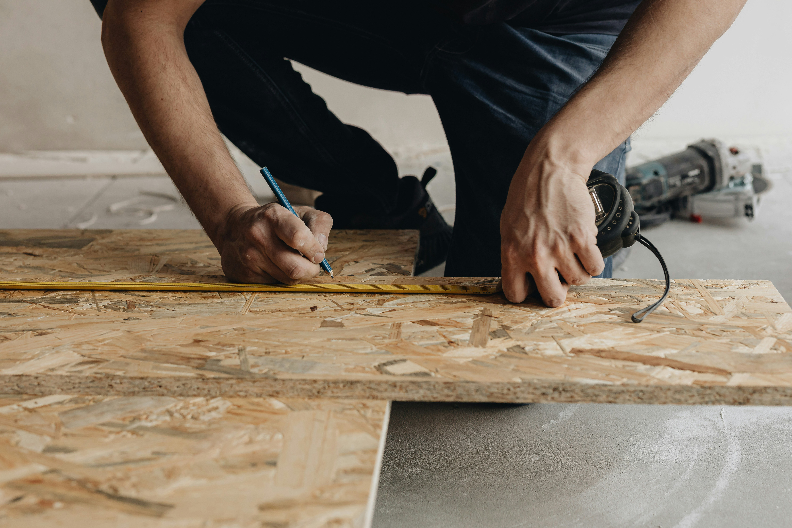
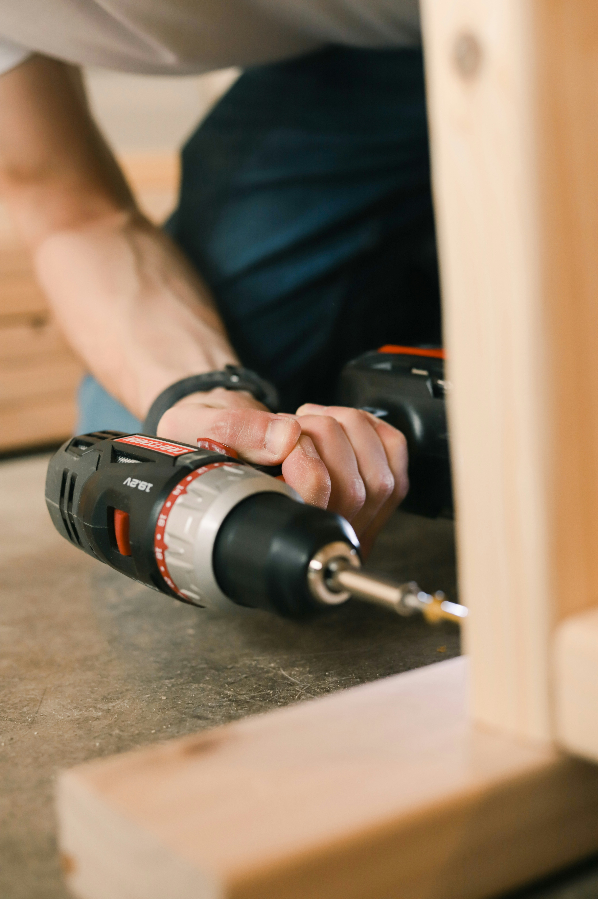

Boat Detailing Services
Your boat deserves to look as good as it performs. Whether it’s docked at Lake Travis, Lake Austin, or stored in the Austin area, our professional boat detailing team restores that showroom shine. We remove grime, oxidation, and water spots caused by Central Texas sun and lakes while protecting your investment from harsh UV rays and elements.

Price
$200–$500+ depending on boat size and condition. A typical 20–25 foot boat usually costs $300–$400. Larger 35–45 foot boats or heavily oxidized vessels can range from $450–$700+. We provide a clear quote after seeing your boat.

Our Boat Detailing Services
- Exterior Wash & Wax: Thorough cleaning and high-quality marine wax to restore shine and protect against UV damage.
- Interior Cleaning & Sanitizing: Deep cleaning of upholstery, carpets, seats, cabinets, and all surfaces.
- Hull Cleaning: Remove algae, barnacles, slime, and waterline stains to improve performance and appearance.
- Polishing & Buffing: Eliminate scratches, oxidation, and dullness for a mirror-like finish.
Our Boat Detailing Process
- Assessment: We inspect your boat’s exterior, hull, and interior to create a custom detailing plan.
- Thorough Cleaning: We wash the hull, deck, and interior, removing dirt, salt, algae, and grime.
- Detailing & Protection: We polish, wax, and apply protective coatings to fiberglass, gelcoat, and metal surfaces.
- Final Inspection: We do a complete walkthrough with you to ensure your boat looks and feels brand new.

Frequently Asked Questions
How much does boat detailing cost in Austin?
Boat detailing in Austin typically costs between $200 and $500+ depending on the size and condition of the vessel. A 20–25 foot boat usually runs $300–$400. Larger boats (35–45 feet) or those with heavy oxidation, barnacle buildup, or neglected interiors can range from $450 to $700 or more. We always provide a transparent, no-surprise quote after assessing your boat at the marina or storage facility.
Do you detail boats at Lake Travis and Lake Austin?
Yes! We provide mobile boat detailing throughout the Austin area and regularly service boats at Lake Travis, Lake Austin, and surrounding marinas and storage facilities in Cedar Park, Leander, Pflugerville, and Round Rock.
How often should I get my boat detailed in Central Texas?
Most boat owners in Austin should detail their vessel 2–4 times per year. The intense Texas sun, heat, and lake water cause oxidation and staining much faster here than in other regions. Regular detailing protects your gelcoat and keeps your boat looking its best.
Is boat detailing hard to do as a DIY project?
Basic washing can be DIY, but professional boat detailing involves proper compounds, polishes, waxes, and techniques to avoid swirl marks or damaging gelcoat. Most Austin boat owners prefer professionals to save time and achieve superior, longer-lasting results.
Can you remove barnacles and algae from the hull?
Yes. We specialize in safe, effective hull cleaning to remove barnacles, algae, slime, and waterline stains that hurt performance and appearance.
How long does boat detailing take?
A standard 25-foot boat usually takes 4–6 hours. Larger boats or those needing heavy restoration can take 1–2 full days. We work efficiently at your marina or storage location.
Do you apply protective coatings and wax?
Absolutely. We use premium marine-grade wax and UV protectants to shield your boat from Central Texas sun, oxidation, and water damage.
Can you detail boats in storage or on a trailer?
Yes. We happily detail boats on trailers, in dry storage, or at marinas — wherever is most convenient for you.
What types of boats do you detail?
We detail all types including pontoons, bass boats, ski boats, yachts, sailboats, and jet skis. No job is too big or too small in the Austin area.
How soon can you detail my boat in the Austin area?
We can usually schedule boat detailing within 3–10 days depending on the season. Spring and early summer are our busiest times around Lake Travis — booking early is recommended.
Is boat detailing worth it before selling or storing for winter?
Yes — a clean, detailed boat sells faster and for more money. It’s also the best way to prepare your vessel for off-season storage to prevent long-term damage from UV rays and moisture.
Keep Your Boat Looking Showroom Ready!
Don’t let sun, water, and algae dull your investment. Contact Moody Home Services for professional boat detailing in Austin, Lake Travis, Cedar Park, Leander, and surrounding areas.